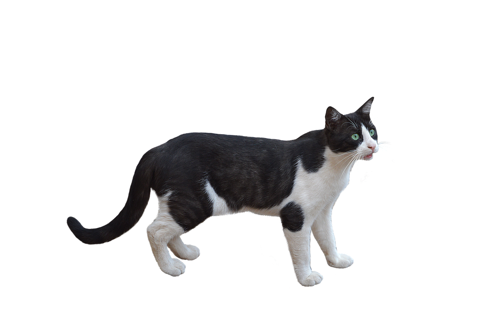

O elemento div serve como um container para outros elementos HTML. É um elemento do tipo block . Isso significa que ele força uma quebra de uma linha antes e depois do elemento
Configurações de estilo podem ser aplicadas ao HTML de diferentes formas.